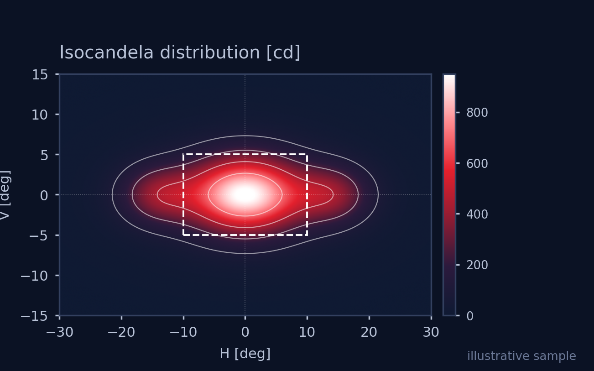
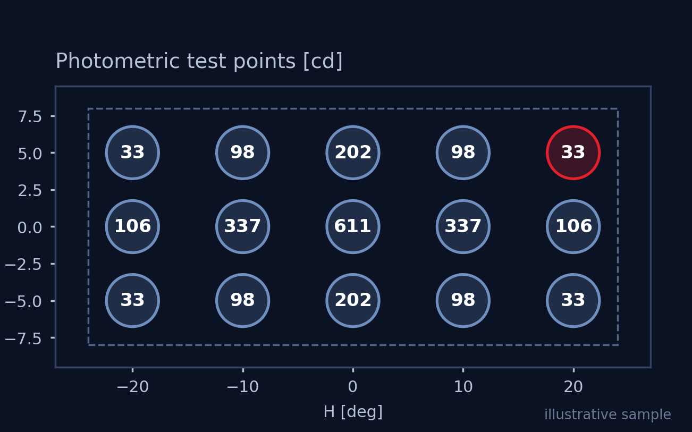
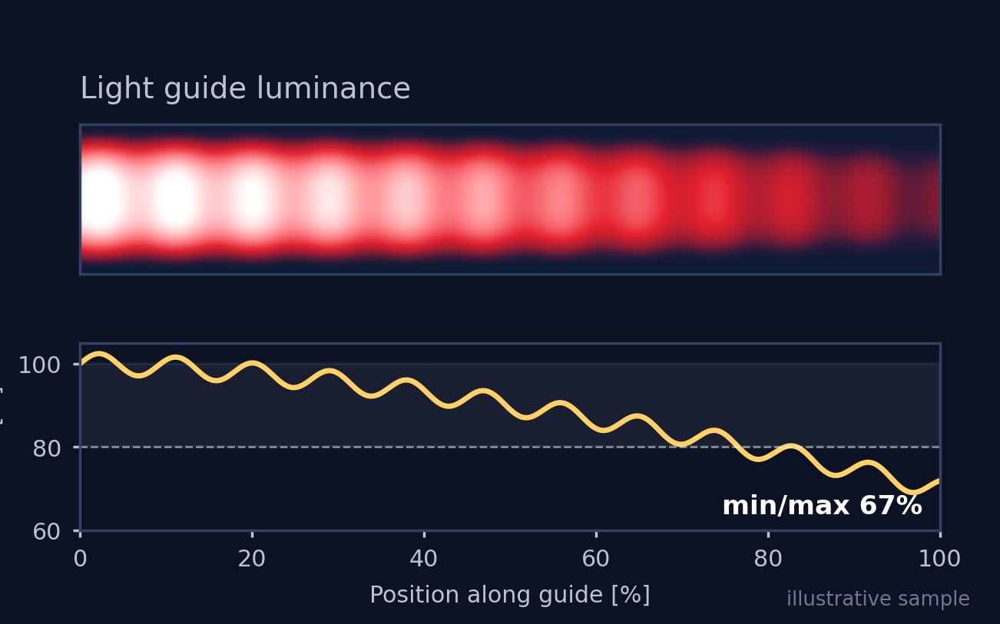
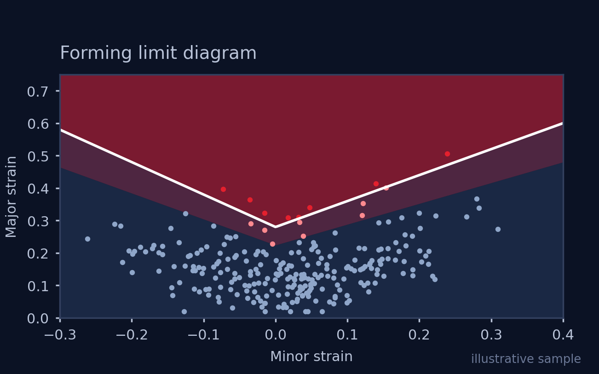

배광 패턴 해석
광선추적으로 등광도 곡선과 광도 분포를 뽑아, 설계가 목표 배광에 맞는지 확인합니다.

램프 금형은 한 번 나오면 고치기 어렵습니다. 그래서 그 전에, 컴퓨터 안에서 몇 번이고 다시 해봅니다.
무드램프, DRL, 리어램프의 광학설계와 해석이 주 업무이고, 외판 성형해석도 함께 합니다.
광선추적으로 등광도 곡선과 광도 분포를 뽑아, 설계가 목표 배광에 맞는지 확인합니다.


KMVSS, ECE 같은 법규 기준을 만족하는지 시뮬레이션 단계에서 미리 봅니다.

무드램프·DRL의 라이트가이드 형상을 바꿔가며 빛이 고르게 퍼지는 조건을 찾습니다.
프레스 성형에서 얇아지거나 찢어질 위험이 있는 구간을 성형한계도(FLD)로 찾아냅니다.

※ 위 이미지는 이해를 돕기 위한 예시입니다.
도면과 사양만 있으면 됩니다.
CAD 데이터, 요구 사양, 맞춰야 할 법규를 보내주세요.
광학 또는 성형 시뮬레이션으로 문제가 되는 구간을 찾습니다.
해석 결과와 함께, 어디를 어떻게 바꾸면 되는지 근거를 드립니다.
바뀐 설계로 다시 해석해서 좋아졌는지 확인합니다.
프레스 성형 시뮬레이션에서 파단 위험 구간을 판단하는 기준을 정리합니다.
자주 반복하는 해석 작업을 자동화하는 소프트웨어를 준비하고 있습니다.
사용 도구 SPEOS, AutoForm, CATIA
도면과 요구 사양을 보내주시면, 어떤 해석이 필요한지부터 같이 정리해 드립니다.
jbkim@ventron.co.kr경기도 평택시 비전2로 195, 209-47호